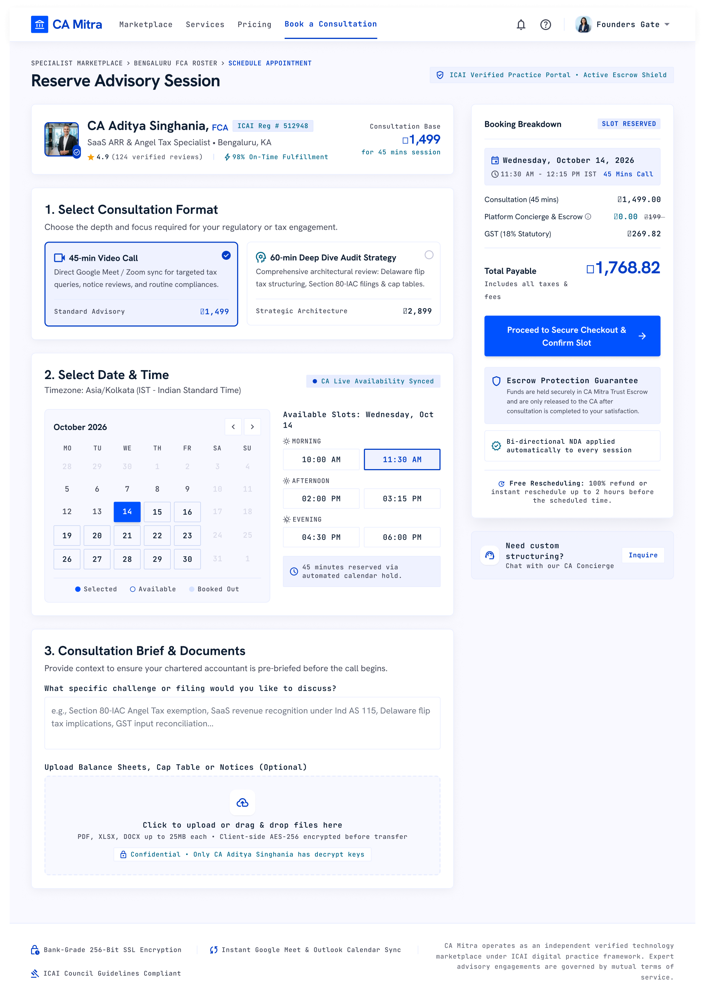
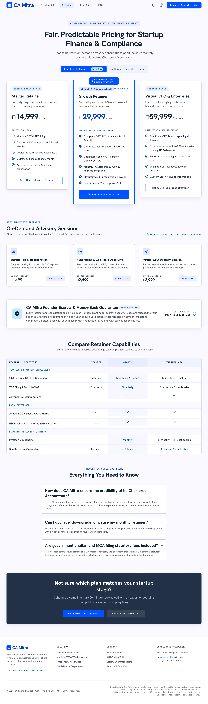

WEBSITE CASE STUDY · CA MITRA
Finance, made approachable.
A 6-page website for a startup-to-chartered-accountant fintech service.
Problem and process
A complex service needed a clearer first step for founders. I explored 2 visual directions, then shaped the page hierarchy, brand direction, and website screens around trust and approachability.
Selected screens



Outcome
A clearer path from a founder's need to the right accounting partner.